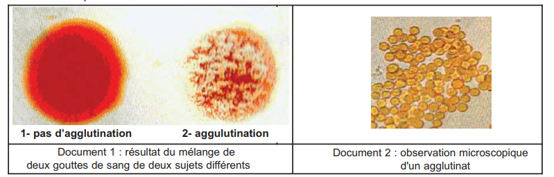
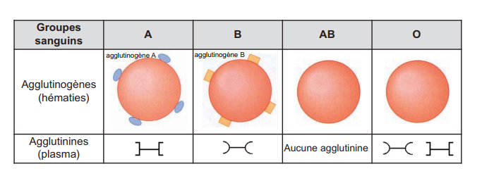
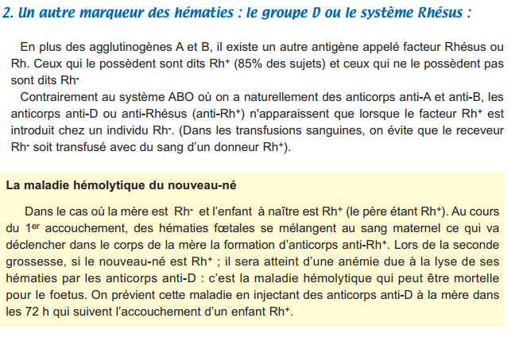
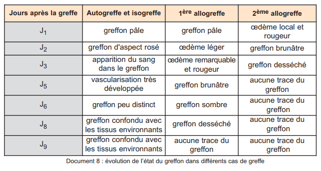
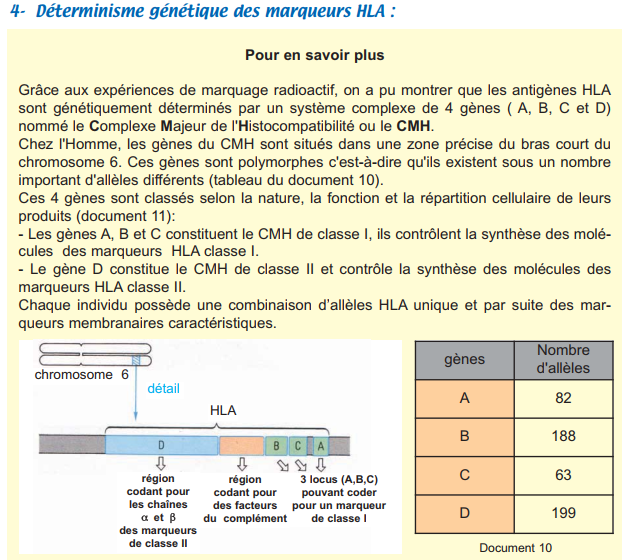

Lorsqu'on mélange deux sangs incompatibles, il se produit une agglutination : les hématies forment des amas par accollement. Cette réaction est due à la rencontre entre des agglutinogènes (glycoprotéines membranaires sur les hématies) et des agglutinines (anticorps plasmatiques).
Il existe 2 types d'agglutinogènes (A et B) et 2 types d'agglutinines correspondantes (anti-A et anti-B). Dans un même sang, un agglutinogène ne peut pas coexister avec l'agglutinine qui lui correspond.






| Groupe | Agglutinogènes (hématies) | Agglutinines (plasma) |
|---|---|---|
| A | A | Anti-B |
| B | B | Anti-A |
| AB | A et B | Aucune |
| O | Aucun | Anti-A + Anti-B |
Le facteur Rhésus est un autre marqueur des hématies. Les personnes Rh+ (85%) possèdent l'antigène D, les Rh− (15%) ne le possèdent pas. Contrairement au système ABO, les anticorps anti-Rh n'apparaissent que lors d'un contact d'un individu Rh− avec du sang Rh+ (transfusion, grossesse).

⚠️ Maladie hémolytique
- Mère Rh− × Père Rh+ → fœtus Rh+
- 1er accouchement : hématies fœtales → mère → anti-D
- 2ème grossesse : anti-D traversent placenta
- → lyse hématies fœtales (anémie, ictère)
🛡️ Prévention
- Injection d'anti-D à la mère dans les 72h après 1er accouchement
- Destruction des hématies fœtales Rh+ avant sensibilisation
Les molécules HLA (Human Leucocyte Antigen) sont des glycoprotéines membranaires découvertes par Jean Dausset (1956). Elles sont présentes sur toutes les cellules nucléées et sont spécifiques à chaque individu (sauf vrais jumeaux).






| Classe | Localisation | Gènes | Cible |
|---|---|---|---|
| HLA I | Toutes les cellules nucléées | CMH A, B, C | LT8 (cytotoxiques) |
| HLA II | Cellules immunitaires (macrophages, LB, LT) | CMH D | LT4 (auxiliaires) |
Dans les cellules, des enzymes découpent les protéines en fragments peptidiques exposés à la surface associés aux molécules HLA. Si la cellule est normale → peptides du soi → tolérance. Si la cellule est anormale (infectée, cancéreuse) → peptides du non soi → le complexe HLA-peptide anormal = soi modifié → déclenche une réaction immunitaire.